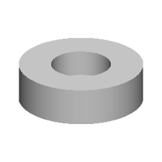
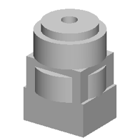
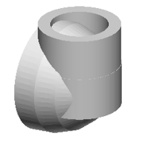
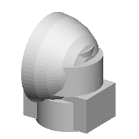
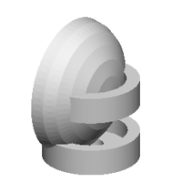
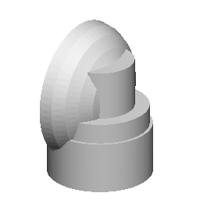

| 정답 |  | | |
| 0 | — | 실행 실패
StdFail_NotDone: GC_MakeArcOfCircle::Value() - no result
4 째 줄 | 1 import cadquery as cq
2 w0=cq.Workplane('XY',origin=(0,0,100))
3 w1=cq.Workplane('XY',origin=(0,0,78))
4 r=w0.sketch().segment((29,32),(30,32)).arc((30,33),(29,32)).assemble().finalize().extrude(-200).union(w1.sketch().arc((-11,100),(-10,95),(-9,90)).arc((-1,93),(7,93)).arc((-1,95),(-11,100)).assemble().finalize().extrude(-178)) |
| 250 | — | 실행 실패
SyntaxError: invalid syntax
1 째 줄 10 째 글자 | 1 10.6, 0.0.0.0.0.0.0.0.0.0.0.0.0.0.0.0.0.0.0.0.0.0.0.0.0.0.0.0.0.0.0.0.0.0.0.0.0.0.0.0.0.0.0.0.0.0.0.0.0.0.0.0.0.0.0.0.0.0.0.0.0.0.0.0.0, 0.0, 0.0, 0.0, 0.0, 0.0, 0.0, 0.0, 0.0, 0.0, 0.0, 0.0, 0.0, 0.0, 0.0, 0.0, 0.0, 0.0, 0.0, 0.0, 0.0, 0.0, 0.0, 0.0, 0.0, 0.0, 0, 0.0, 0, 0, 0, 0, 0, 0, 0, 0, 0, 0, 0, 0, 0, 0, 0, 0, 0, 0, 0, 0, 0, 0, 0, 0, 0, 0, 0, 0, 0, 0, 0, 0, 0, 0, 0, 0, 0, 0, 0, 0, 0, 0, 0, 0, 0, 0, 0, 0, 0, 0, 0, 0, 0, 0, 0, 0, 0, 0, 0, 0, 0, 0, 0, 0, 0, 0, 0, 0, 0, 0, 0, 0, 0, 0, 0, 0, 0, 0, 0, 0, 0, 0, 0, 0, 0, 0, 0, 0, 0, 0, 0, 0, 0, 0, 0, 0, 0, 0, 0, 0, 0, 0, 0, 0, 0, 0, 0, 0, 0, 0, 0, 0, 0, 0, 0, 0, 0, 0, 0, 0, 0, 0, 0, 0, 0, 0, 0, 0, 0, 0, 0, 0, 0, 0, 0, 0, 0, 0, 0, 0, 0, 0, 0, 0, 0, 0, 0, 0, 0, 0, 0, 0, 0, 0, 0, 0, 0, 0, 0, 0, 0, 0, 0, 0, 0, 0, 0, 0, 0, 0, 0, 0, 0, 0, 0, 0, 0, 0, 0, 0, 0, 0, 0, 0, 0, 0, 0, 0, 0, 0, 0, 0, 0, 0, 0, 0, 0, 0, 0, 0, 0, 0, 0, 0, 0, 0, 0, 0, 0, 0, 0, 0, 0, 0, 0, 0, 0, 0, 0, 0, 0, 0, 0, 0, 0, 0, 0, 0, 0, 0, 0, 0, 0, 0, 0, 0, 0, 0, 0, 0, 0, 0, 0, 0, 0, 0, 0, 0, 0, 0, 0, 0 ^ |
| 500 | — | 실행 실패
SyntaxError: closing parenthesis ')' does not match opening parenthesis '['
2 째 줄 714 째 글자 | 1 b0 = place(cq.Workplane("XY").box(44.8, 10.4, 11.0, centered=(True, True, False)).faces(">Z").workplane(origin=(0, 0, 11.0)).center(1.3, 1.0).hole(1.6), "x", (0.0, 0.0, 0.0))
2 b1 = place(cq.Workplane("XZ").polyline([(0.0, 0.0), (10.0, 0.0), (10.0, 16.0), (15.0, 16.0), (15.0, 20.0), (10.0, 20.0), (10.0, 16.0), (10.0, 16.0), (10.0, 10.0), (0.0, 10.0), (0.0, 0.0), (0.0, 0.0), (0.0, 16.0), (0.0, 16.0), (0.0, 20.0), (0.0, 16.0), (0.0, 16.0), (0.0, 16.0), (0.0, 20.0), (0.0, 16.0), (0.0, 16.0), (0.0, 10.0), (0.0, 10.0), (0.0, 16.0), (0.0, 16.0), (0.0, 20.0), (0.0, 16.0), (0.0, 16.0), (0.0, 16.0), (0.0, 16.0), (0.0, 20.0), (0.0, 16.0), (0.0, 16.0), (0.0, 16.0), (0.0, 20.0), (0.0, 16.0), (0.0, 16.0), (0.0, 16.0), (0.0, 20.0), (0.0, 16.0), (0.0, 16.0), (0.0, 20.0), " "x", (0.0, -16.0), "b", (0.0, -17.0), "b", (0.0, -16.0), (0.0, -15.0), "b =one, (0, -16.0), "b = 2, -16.0), "b = 2, -16.0), "b = 2, -16.0), "b = -16.0), "b = -16.0), "b = -16.0), "b = -16.0), "b = -16.0), "b = -16.0), "b = -16.0), "b = -16.0), "b = -16.0), "b = -16.0), "b = -16.0), "b = -16.0), "b = -16.0), "b = -16.0), "b = -16.0), "b = -16.0), "b = -16.0), "b = -16.0), "b = -16.0), "b = -16.0), (0.0, -16.0), "b = -16.0), (0.0, -16.0), (0.0, -17.0), " "x", (0.0, -16.0), "b = -16.0), "b = -16.0), "b = -17.0), "b = -16.0), (0.0, -16.0), (0.0, -17.0), (0.0, -16.0), (0.0, -17.0), (0.0, -16.0), (0.0, -17.0), (0.0, -16. ^ |
| 750 | — | 실행 실패
SyntaxError: closing parenthesis ']' does not match opening parenthesis '(' on line 5
7 째 줄 157 째 글자 | 1 b0 = place(cq.Workplane("XZ").polyline([(0.0, 0.0), (15.1, 0.0), (15.1, 12.2), (10.5, 12.2), (10.5, 6.2), (0.0, 6.2)]).close().revolve(360, (0, 0, 0), (0, 1, 0)), "y", (0.0, 0.0, 0.0))
2 b1 = place(cq.Workplane("XZ").polyline([(0.0, 0.0), (25.2, 0.0), (25.2, 12.2), (20.2, 12.2), (20.1, 6.2), (0.0, 6.2)]).close().revolve(360, (0, 0, 0), (0, 1, 0)), "y", (0.0, 0.0, 0.0))
3 b2 = place(cq.Workplane("XZ").polyline([(0.0, 0.0), (25.2, 0.0), (25.2, 12.2), (20.2, 12.2), (20.1, 6.2), (0.0, 6.2)]).close().revolve(360, (0, 0, 0), (0, 1, 0)), "y", (0.0, 0.0, 0.0))
4 b2 = place(cq.Workplane("XZ").polyline([(0.0, 0.0), (25.2, 0.0), (25.2, 12.2), (20.2, 12.2), (20.1, 6.2), (0.0, 6.2)]).close().revolve(360, (0, 0, 0), (0, 1, 0)), "y", (0.0, 0.0, 0.0))
5 b2 = place(cq.Workplane("XY").box(38.1, 40.2, 20.2, centered=(0.0, 1.5, 20.2))
6 b2 = place(cq.Workplane("XY").box(36.8, 38.2, 20.2, centered=(0.0, 1.3, 20.2))
7 b2 = place(cq.Workplane("XY").box(36.8, 38.2, 20.2, centered=(0.0, 1.3, 20.2), "b2, 20.2), "b2, 3.1), "b2, 4.1), "b2, 2.9), "b2, 1.0), "b2, 2.9), (0.0, 2.9)]).close().revolve(360, (0, 0, 0), (0, 1, 0)), "z", (0.0, 0.0, 0.0)) ^
8 b2 = place(cq.Workplane("XY").box(36.8, 38.2, 20.2, centered=(True, True, False)).faces(">Z").workplane(origin=(0, 0, 20.2)).center(1.5, -1.6).rect(17.6, 1.6).cutBlind(-1.6), "z", (0.0, 0.0, -25.5))
9 b2 = place(cq.Workplane("XY").box(36.8, 24.2, 20.2, centered=(0.0, 1.5, 20.2))
10 b2 = place(cq.Workplane("XY").rect(15.8, 24.2, 20.2, -26.2).result", (0.0, 17.5, 20.2))
11 b3 = place(cq.Workplane("XY").box(36.8, 24.2, 20.2, centered=(0.0, 17.5, -10.5))
12 result = b0.union(b2.union(b2.union |
| 1000 | — | 실행 실패
SyntaxError: '(' was never closed
8 째 줄 171 째 글자 | 1 b0 = place(cq.Workplane("XZ").polyline([(0.0, 0.0), (28.0, 0.0), (28.0, 18.0), (15.0, 18.0), (15.0, 38.0), (0.0, 38.0)]).close().revolve(360, (0, 0, 0), (0, 1, 0)), "z", (0.0, 0.0, 0.0))
2 b1 = place(cq.Workplane("XZ").polyline([(0.0, 0.0), (26.0, 0.0), (26.0, 18.0), (22.0, 18.0), (22.0, 25.0), (0.0, 25.0)]).close().revolve(360, (0, 0, 0), (0, 1, 0)), "z", (0.0, 0.0, 0.0))
3 b2 = place(cq.Workplane("XZ").polyline([(0.0, 0.0), (26.0, 0.0), (26.0, 18.0), (22.0, 18.0), (22.0, 25.0), (0.0, 25.0)]).close().revolve(360, (0, 0, 0), (0, 1, 0)), "z", (0.0, 0.0, 26.0))
4 b2 = place(cq.Workplane("XZ").polyline([(0.0, 0.0), (26.0, 0.0), (26.0, 18.0), (25.0, 18.0), (25.0, 25.0), (0.0, 25.0)]).close().revolve(360, (0, 0, 0), (0, 1, 0)), "z", (0.0, 0.0, 26.0))
5 b3 = place(cq.Workplane("XZ").polyline([(0.0, 0.0), (26.0, 0.0), (26.0, 18.0), (25.0, 18.0), (25.0, 25.0), (0.0, 25.0)]).close().revolve(360, (0, 0, 0), (0, 1, 0)), "z", (0.0, 0.0, 26.0))
6 b3 = place(cq.Workplane("XZ").polyline([(0.0, 0.0), (26.0, 0.0), (26.0, 18.0), (25.0, 18.0), (25.0, 25.0), (0.0, 25.0)]).close().revolve(360, (0, 0, 0), (0, 1, 0)), "z", (0.0, 0.0, 26.0))
7 b3 = place(cq.Workplane("XZ").polyline([(0.0, 0.0), (26.0, 0.0), (26.0, 18.0), (25.0, 18.0), (25.0, 25.0), (0.0, 25.0)]).close().revolve(360, (0, 0, 0), (0, 1, 0)), "z", (0.0, 0.0, 26.0))
8 b3 = place(cq.Workplane("XZ").polyline([(0.0, 0.0), (26.0, 0.0), (26.0, 18.0), (25.0, 18.0), (25.0, 25.0), (0.0, 25.0)]).close().revolve(360, (0, 0, 0), (0, 1, 0)), "z", (0.0, 0.0, ^ |
| 1250 | — | 실행 실패
SyntaxError: closing parenthesis ')' does not match opening parenthesis '['
6 째 줄 167 째 글자 | 1 b0 = place(cq.Workplane("XZ").polyline([(0.0, 0.0), (28.0, 0.0), (28.0, 15.0), (15.0, 15.0), (15.0, 30.0), (0.0, 30.0)]).close().revolve(360, (0, 0, 0), (0, 1, 0)).faces(">Z").workplane(origin=(0, 0, 30.0)).center(1.1, 1.0).hole(11.0, 10.0), "z", (0.0, 0.0, 0.0))
2 b1 = place(cq.Workplane("XZ").polyline([(0.0, 0.0), (18.6, 0.0), (18.6, 15.0), (14.5, 15.0), (14.5, 30.0), (0.0, 30.0)]).close().revolve(360, (0, 0, 0), (0, 1, 0)).faces(">Z").workplane(origin=(0, 0, 30.0)).center(11.0, -1.1).hole(11.0, 15.0), "z", (0.0, 0.0, -15.0))
3 b2 = place(cq.Workplane("XZ").polyline([(0.0, 0.0), (27.0, 0.0), (27.0, 15.0), (18.0, 15.0), (18.0, 30.0), (0.0, 30.0)]).close().revolve(360, (0, 0, 0), (0, 1, 0)).faces(">Z").workplane(origin=(0, 0, 30.0)).center(11.0, -10.3).hole(11.0, 15.0, 15.0), "x", (0.0, 0.0, -28.9))
4 b3 = place(cq.Workplane("XZ").polyline([(0.0, 0.0), (27.0, 0.0), (27.0, 15.0), (18.0, 15.0), (18.0, 30.0), (0.0, 30.0)]).close().revolve(360, (0, 0, 0), (0, 1, 0)).faces(">Z").workplane(origin=(0, 0, 30.0)).center(11.0, -10.3).hole(11.0, 15.0, 15.0), "x", (0.0, 29.0, 0.0))
5 b4 = place(cq.Workplane("XZ").polyline([(0.0, 0.0), (27.0, 0.0), (27.0, 15.0), (22.0, 15.0), (22.0, 30.0), (0.0, 30.0)]).close().revolve(360, (0, 0, 0), (0, 1, 0)).faces(">Z").workplane(origin=(0, 0, 30.0)).center(11.0, -10.3).hole(11.0, 15.0, 15.0), "x", (0.0, 29.0, 0.0))
6 b4 = place(cq.Workplane("XZ").polyline([(0.0, 0.0), (26.0, 0.0), (26.0, 15.0), (18.0, 15.0), (18.0, 30.0), (0.0, 30.0), (0.0, 0.0), (0.0, 1.6), "x", (0.0, -27.7, 0.0)) ^
7 b3 = place(cq.Workplane("XZ").polyline([(0.0, |
| 1500 |  | IoU 0.65 | 1 b0 = place(cq.Workplane("XZ").polyline([(0.0, 0.0), (25.0, 0.0), (25.0, 15.0), (15.0, 15.0), (15.0, 3.1), (0.0, 3.1)]).close().revolve(360, (0, 0, 0), (0, 1, 0)).faces(">Z").workplane(origin=(0, 0, 15.0)).center(-1.1, -1.0).hole(11.0), "z", (0.0, 0.0, 0.0))
2 b1 = place(cq.Workplane("XZ").polyline([(0.0, 0.0), (18.2, 0.0), (18.2, 12.0), (12.1, 12.0), (12.1, 3.1), (0.0, 3.1)]).close().revolve(360, (0, 0, 0), (0, 1, 0)).faces(">Z").workplane(origin=(0, 0, 12.0)).center(-1.2, -1.2).hole(11.0), "z", (0.0, 0.0, 0.0))
3 b2 = place(cq.Workplane("XZ").polyline([(0.0, 0.0), (18.0, 0.0), (18.0, 15.0), (12.0, 15.0), (12.0, 3.1), (0.0, 3.1)]).close().revolve(360, (0, 0, 0), (0, 1, 0)).faces(">Z").workplane(origin=(0, 0, 15.0)).center(-1.2, -1.2).hole(11.0), "z", (0.0, 0.0, 0.0))
4 result = b0.union(b1.union(b2)) |
| 1750 |  | IoU 0.51 | 1 b0 = place(cq.Workplane("XZ").polyline([(0.0, 0.0), (25.2, 0.0), (25.2, 19.0), (17.9, 19.0), (17.9, 25.0), (0.0, 25.0)]).close().revolve(360, (0, 0, 0), (0, 1, 0)).faces(">Z").workplane(origin=(0, 0, 25.0)).center(-1.1, 1.6).hole(11.6), "z", (0.0, 0.0, 0.0))
2 b1 = place(cq.Workplane("XY").box(45.6, 39.6, 25.0, centered=(True, True, False)).faces(">Z").workplane(origin=(0, 0, 25.0)).center(1.6, -1.6).hole(10.5), "z", (0.0, 0.0, 0.0))
3 b2 = place(cq.Workplane("XZ").polyline([(0.0, 0.0), (25.2, 0.0), (25.2, 19.0), (20.1, 19.0), (20.1, 25.0), (0.0, 25.0)]).close().revolve(360, (0, 0, 0), (0, 1, 0)).faces(">Z").workplane(origin=(0, 0, 25.0)).center(-1.6, 1.6).hole(11.6), "z", (0.0, 0.0, 25.0))
4 b3 = place(cq.Workplane("XY").box(50.2, 39.6, 25.0, centered=(True, True, False)).faces(">Z").workplane(origin=(0, 0, 25.0)).center(-1.6, 1.0).hole(10.4, 10.0), "z", (0.0, 0.0, -24.0))
5 result = b0.union(b1.union(b2.union(b3))) |
| 2000 |  | IoU 0.61 | 1 b0 = place(cq.Workplane("XZ").polyline([(0.0, 0.0), (28.0, 0.0), (27.0, 10.9), (23.5, 20.5), (18.4, 27.0), (12.8, 33.0), (6.7, 36.0), (0.0, 37.0)]).close().revolve(360, (0, 0, 0), (0, 1, 0)), "x", (0.0, 0.0, 0.0))
2 b1 = place(cq.Workplane("XZ").polyline([(0.0, 0.0), (20.2, 0.0), (20.2, 21.0), (14.1, 21.0), (14.1, 10.0), (0.0, 10.0)]).close().revolve(360, (0, 0, 0), (0, 1, 0)).faces(">Z").workplane(origin=(0, 0, 21.0)).center(-1.6, 1.6).hole(11.0), "z", (0.0, 0.0, 0.0))
3 b2 = place(cq.Workplane("XZ").polyline([(0.0, 0.0), (20.0, 0.0), (20.0, 21.0), (14.0, 21.0), (14.0, 4.0), (0.0, 4.0)]).close().revolve(360, (0, 0, 0), (0, 1, 0)).faces(">Z").workplane(origin=(0, 0, 21.0)).center(-1.6, -1.6).hole(11.6), "z", (0.0, 0.0, 20.0))
4 result = b0.union(b1.union(b2)) |
| 2250 |  | IoU 0.56 | 1 b0 = place(cq.Workplane("XZ").polyline([(0.0, 0.0), (28.0, 0.0), (27.0, 8.7), (24.5, 16.0), (20.1, 23.0), (14.8, 27.5), (8.8, 30.0), (0.0, 31.0)]).close().revolve(360, (0, 0, 0), (0, 1, 0)), "x", (0.0, 0.0, 0.0))
2 b1 = place(cq.Workplane("XZ").polyline([(0.0, 0.0), (20.0, 0.0), (20.0, 19.0), (14.5, 19.0), (14.5, 25.0), (0.0, 25.0)]).close().revolve(360, (0, 0, 0), (0, 1, 0)).faces(">Z").workplane(origin=(0, 0, 25.0)).center(-1.1, -1.2).hole(11.0, 11.0), "z", (0.0, 0.0, 0.0))
3 b2 = place(cq.Workplane("XZ").polyline([(0.0, 0.0), (20.0, 0.0), (20.0, 19.0), (14.9, 19.0), (14.9, 25.0), (0.0, 25.0)]).close().revolve(360, (0, 0, 0), (0, 1, 0)).faces(">Z").workplane(origin=(0, 0, 25.0)).center(-1.9, -1.2).hole(11.9, 11.0), "z", (0.0, 0.0, -23.0))
4 b3 = place(cq.Workplane("XY").box(45.6, 30.0, 22.0, centered=(True, True, False)).faces(">Z").workplane(origin=(0, 0, 22.0)).center(-1.6, -1.2).hole(10.0, 10.0), "z", (0.0, 0.0, -23.0))
5 result = b0.union(b1.union(b2.union(b3))) |
| 2500 | — | 실행 실패
SyntaxError: '(' was never closed
3 째 줄 11 째 글자 | 1 b0 = place(cq.Workplane("XZ").polyline([(0.0, 0.0), (28.2, 0.0), (27.2, 5.1), (24.5, 10.7), (20.1, 15.0), (14.8, 18.9), (8.2, 20.0), (0.0, 21.0)]).close().revolve(360, (0, 0, 0), (0, 1, 0)), "z", (0.0, 0.0, 0.0))
2 b1 = place(cq.Workplane("XZ").polyline([(0.0, 0.0), (20.0, 0.0), (20.0, 11.0), (13.0, 11.0), (13.0, 31.0), (0.0, 31.0)]).close().revolve(360, (0, 0, 0), (0, 1, 0)), "y", (0.0, 0.0, 29.0))
3 b2 = place(cq.Workplane("XY").add(cq.Workplane("XZ").polyline([(0.0, 0.0), (20.0, 0.0), (20.0, 11.0), (13.0, 11.0), (13.0, 31.0), (0.0, 31.0)]).close().revolve(360, (0, 0, 0), (0, 1, 0)), "z", (0.0, 0.0, -29.2)) ^
4 b3 = place(cq.Workplane("XY").box(45.0, 40.0, 12.0, centered=(True, True, False)).faces(">Z").workplane(origin=(0, 0, 12.0)).center(-1.2, 1.0).hole(10.0, 5.0).faces(">Z").workplane(origin=(0, 0, 12.0)).center(1.6, 1.0).hole(10.0, 6.4), "z", (0.0, 0.0, -29.2))
5 result = b0.union(b1.union(b2.union(b3.union(b4)))) |
| 2750 |  | IoU 0.58 | 1 b0 = place(cq.Workplane("XZ").polyline([(0.0, 0.0), (28.2, 0.0), (27.2, 5.1), (24.5, 9.8), (20.1, 13.5), (14.8, 16.9), (8.4, 18.9), (0.0, 19.9)]).close().revolve(360, (0, 0, 0), (0, 1, 0)), "x", (0.0, 0.0, 0.0))
2 b1 = place(cq.Workplane("XZ").polyline([(0.0, 0.0), (20.0, 0.0), (20.0, 11.0), (14.5, 11.0), (14.5, 3.1), (0.0, 3.1)]).close().revolve(360, (0, 0, 0), (0, 1, 0)).faces(">Z").workplane(origin=(0, 0, 11.0)).center(-1.2, -1.2).hole(11.1, 10.0), "z", (0.0, 0.0, 0.0))
3 b2 = place(cq.Workplane("XZ").polyline([(0.0, 0.0), (20.0, 0.0), (20.0, 11.0), (14.9, 11.0), (14.9, 3.9), (0.0, 3.9)]).close().revolve(360, (0, 0, 0), (0, 1, 0)).faces(">Z").workplane(origin=(0, 0, 11.0)).center(-1.2, 1.9).hole(10.0, 10.0), "z", (0.0, 0.0, -23.2))
4 result = b0.union(b1.union(b2)) |
| 3000 |  | IoU 0.56 | 1 b0 = place(cq.Workplane("XZ").polyline([(0.0, 0.0), (28.2, 0.0), (27.2, 5.1), (24.5, 9.8), (20.1, 13.5), (14.8, 16.9), (8.4, 18.9), (0.0, 19.9)]).close().revolve(360, (0, 0, 0), (0, 1, 0)), "x", (0.0, 0.0, 0.0))
2 b1 = place(cq.Workplane("XZ").polyline([(0.0, 0.0), (20.0, 0.0), (20.0, 11.0), (14.0, 11.0), (14.0, 31.0), (0.0, 31.0)]).close().revolve(360, (0, 0, 0), (0, 1, 0)).faces(">Z").workplane(origin=(0, 0, 31.0)).center(-1.1, -1.1).hole(11.9, 15.0), "z", (0.0, 0.0, 0.0))
3 b2 = place(cq.Workplane("XZ").polyline([(0.0, 0.0), (20.0, 0.0), (20.0, 11.0), (14.0, 11.0), (14.0, 3.1), (0.0, 3.1)]).close().revolve(360, (0, 0, 0), (0, 1, 0)).faces(">Z").workplane(origin=(0, 0, 11.0)).center(-1.2, 1.9).hole(11.9, 10.0), "z", (0.0, 0.0, -23.2))
4 b3 = place(cq.Workplane("XY").circle(21.3).extrude(21.0).faces(">Z").workplane(origin=(0, 0, 21.0)).center(-10.0, -10.2).hole(10.0, 10.0), "z", (0.0, 0.0, -23.2))
5 b4 = place(cq.Workplane("XZ").polyline([(0.0, 0.0), (20.0, 0.0), (20.0, 11.0), (13.0, 11.0), (13.0, 3.8), (0.0, 3.8)]).close().revolve(360, (0, 0, 0), (0, 1, 0)), "z", (0.0, 0.0, -23.2))
6 result = b0.union(b1.union(b2.union(b3.union(b4)))) |